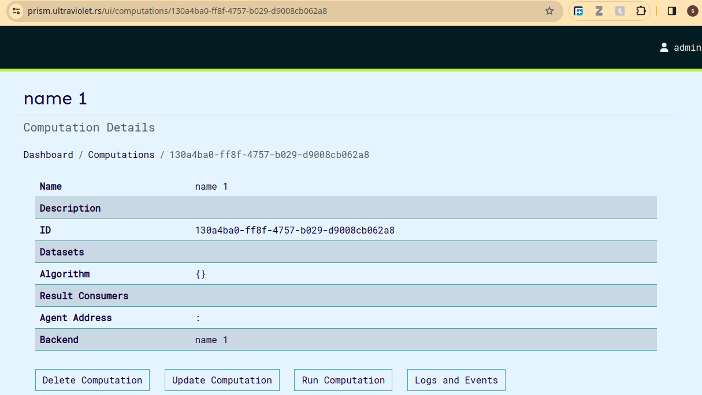

Computations#
The computations service provides a means to manage computations, with functions such as computation creation, update, deletion, and running.
Add Computation#
In order to create computation, we can to provide the following content:
curl -sSiX POST https://prism.ultraviolet.rs/computations -H "Content-Type: application/json" -H "Authorization: Bearer <user_token>" -d @- << EOF
{
"name": "<name>",
"description": "<description>",
"backend_id": <backend_id"
]
}
EOF
On the ui this can be done on this page as shown here

Example:
curl -sSiX POST https://prism.ultraviolet.rs/computations -H "Content-Type: application/json" -H "Authorization: Bearer <user_token>" -d @- << EOF
{
"name": "Machine Diagnostics Analysis",
"description": "Performing diagnostics analysis on machine data",
"backend_id": "fde3263e-70b8-4ce9-9f3c-4a203a0dcdf5",
"agent_config": {
"log_level": "debug"
}
}
EOF
Response:
HTTP/1.1 201 Created
Content-Type: application/json
Location: /computations/240be921-5758-4ffa-9ed3-97e6e72e97ea
Date: Thu, 02 May 2024 14:29:22 GMT
Content-Length: 0
Retrieve Computations#
In order to get all computations:
curl -sSiX GET https://prism.ultraviolet.rs/computations -H "Authorization: Bearer <user_token>"
Example:
curl -sSiX GET https://prism.ultraviolet.rs/computations -H "Authorization: Bearer <user_token>"
Response:
HTTP/2 200
content-type: application/json
date: Mon, 27 May 2024 11:37:50 GMT
x-frame-options: DENY
x-xss-protection: 1; mode=block
content-length: 433
{"computations":[{"id":"f025d311-193a-469b-b504-f137e0b768c2","name":"name 1","status":"executable","owner":"e20aaa5a-95d7-444a-8471-51c67082adbf","start_time":"2024-05-27T11:36:42.99242Z","end_time":"0001-01-01T00:00:00Z","algorithm":{},"agent_config":{"log_level":"","cert_file":"","server_key":"","server_ca_file":"","client_ca_file":"","attested_tls":false},"agent_port":"","backend_id":"cbaf711f-a086-48e0-bea1-a53a9650ba9c"}]}
On the UI the listed computations appear so:

Retrieve Computation Information#
In order to get one specific computation, by ID:
curl -sSiX GET https://prism.ultraviolet.rs/computations/<computation_id> -H "Authorization: Bearer <user_token>"
Example:
curl -sSiX GET https://prism.ultraviolet.rs/computations/f025d311-193a-469b-b504-f137e0b768c2 -H "Authorization: Bearer <user_token>"
Response:
HTTP/2 200
content-type: application/json
date: Mon, 27 May 2024 11:39:22 GMT
x-frame-options: DENY
x-xss-protection: 1; mode=block
content-length: 414
{"id":"f025d311-193a-469b-b504-f137e0b768c2","name":"name 1","status":"executable","owner":"e20aaa5a-95d7-444a-8471-51c67082adbf","start_time":"2024-05-27T11:36:42.99242Z","end_time":"0001-01-01T00:00:00Z","algorithm":{},"agent_config":{"log_level":"","cert_file":"","server_key":"","server_ca_file":"","client_ca_file":"","attested_tls":false},"agent_port":"","backend_id":"cbaf711f-a086-48e0-bea1-a53a9650ba9c"}
The view computation page appears as below, it also contains buttons to edit, run, delete and view computation logs and events.

Update Computations Information#
In order to update computation:
curl -sSiX PUT https://prism.ultraviolet.rs/computations/<computation_id> -H "Content-Type: application/json" -H "Authorization: Bearer <user_token>" -d @- <<EOF
{
"name": "[computation_name]",
"description": "[computation_description]",
"datasets": ["[dataset_1]", "[dataset_2]", "[dataset_3]"],
"algorithm": ["[algorithm_1]", "[algorithm_2]", "[algorithm_3]"],
}
EOF
Example:
curl -sSiX PUT https://prism.ultraviolet.rs/computations/8b131663-058d-4e8f-8ccb-cc83c3f9e694 -H "Content-Type: application/json" -H "Authorization: Bearer <user_token>" -d @- <<EOF
{
"name": "CNC Machine Diagnostics Analysis",
"description": "Performing diagnostics analysis on CNC machine data",
"result_consumers": [
"3ed2a2ad-8251-484c-a39b-bdb82f122f67",
"622d4b11-1b06-426e-baf6-e80d7025f961"
]
}
EOF
Response:
HTTP/2 200
content-type: application/json
date: Mon, 27 May 2024 11:51:25 GMT
x-frame-options: DENY
x-xss-protection: 1; mode=block
content-length: 0
The update computation page appears as below:

Run Computation#
In order to get one pspecific computation, by ID:
curl -sSiX POST https://prism.ultraviolet.rs/computations/<computation_id>/run -H "Content-Type: application/json" -H "Authorization: Bearer <user_token>"
Example:
curl -sSiX POST https://prism.ultraviolet.rs/computations/8b131663-058d-4e8f-8ccb-cc83c3f9e694/run -H "Content-Type: application/json" -H "Authorization: Bearer <user_token>"
Response:
HTTP/1.1 200 OK
Content-Type: application/json
Date: Fri, 03 May 2024 08:37:24 GMT
Content-Length: 0
Remove a Computation#
In order to delete computation:
curl -sSiX DELETE "https://prism.ultraviolet.rs/computations/<computation_id>" -H "Authorization: Bearer <user_token>"
Example:
curl -sSiX DELETE "https://prism.ultraviolet.rs/computations/8b131663-058d-4e8f-8ccb-cc83c3f9e694" -H "Authorization: Bearer <user_token>"
Response:
HTTP/1.1 204 No Content
Content-Type: application/json
Date: Thu, 10 Aug 2023 07:34:17 GMT
X-Frame-Options: DENY
X-Xss-Protection: 1; mode=block